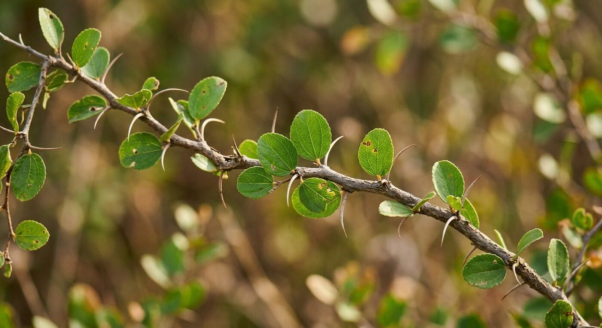

Qu'est-ce que le sidr exactement ?
Le sidr désigne, au sens large, les feuilles séchées et réduites en poudre d'arbres du genre Ziziphus (famille des Rhamnacées), en particulier Ziziphus spina-christi au Moyen-Orient. C'est aussi le nom arabe donné à cet arbre, mentionné à quatre reprises dans le Coran (Wikipédia, Sidrat al-Muntaha). Pour tout savoir sur l'arbre lui-même, direction notre article origine et histoire du sidr ; pour la poudre (composition, bienfaits, dosage, achat), notre guide complet de la poudre de sidr.
Sidr et jujubier, est-ce la même chose ?
Pas tout à fait : les deux mots renvoient au même genre botanique Ziziphus, mais recouvrent en réalité plusieurs espèces différentes selon les régions (Z. spina-christi, Z. lotus, Z. jujuba...). Le détail complet est dans notre article Sidr et jujubier : le guide des espèces Ziziphus.
Peut-on utiliser la poudre de sidr tous les jours ?
Un usage quotidien n'est en général pas recommandé. La plupart des praticiennes du soin naturel conseillent une application hebdomadaire, en alternance avec un shampoing doux habituel, pour éviter d'assécher le cuir chevelu à force de lavages nettoyants répétés (Nilabeautys).
Le sidr remplace-t-il un shampoing classique ?
Il peut servir d'alternative nettoyante grâce à ses saponines moussantes, mais sa formulation n'est pas celle d'un shampoing industriel. Beaucoup l'utilisent comme soin nettoyant en profondeur, une fois par semaine, en complément de leur routine habituelle. Détails dans notre article feuilles de sidr pour les cheveux.
Peut-on mélanger le sidr avec d'autres ingrédients comme le henné ou l'argile ?
Oui. Le sidr se marie traditionnellement avec le henné (nettoyage + fixation de couleur), l'argile (effet purifiant), le miel, le yaourt ou l'aloe vera pour renforcer l'hydratation. Nos 5 recettes de masques au sidr détaillent ces associations pas à pas.

Pourquoi utilise-t-on le sidr dans le ghusl, le rituel funéraire musulman ?
Selon un hadith authentique, le prophète Muhammad (pbsl) aurait recommandé de laver le corps d'une défunte avec de l'eau mélangée à des feuilles de sidr, avant un second lavage au camphre (Muslim Funeral Services). Cette pratique perdure aujourd'hui ; nous la détaillons dans notre article le sidr à travers le monde.
Les bienfaits du sidr sont-ils prouvés scientifiquement ou seulement traditionnels ?
Les deux se rencontrent. Des extraits de Ziziphus spina-christi ont montré, en laboratoire, une activité antibactérienne et anti-inflammatoire mesurable (Kadioglu et al., 2016). En revanche, certaines promesses commerciales — pousse accélérée, densité renforcée — reposent surtout sur la tradition et n'ont pas encore fait l'objet d'essais cliniques publiés à grande échelle chez l'humain. Nous détaillons cette nuance dans nos articles cheveux et peau.
Où pousse le sidr et comment est récolté le miel de sidr ?
Le sidr (Ziziphus spina-christi) pousse dans le Levant, en Mésopotamie, dans la péninsule Arabique et en Afrique de l'Est. Le miel de sidr, très réputé au Yémen, est récolté lors d'une courte saison hivernale de floraison (Hives of Yemen).
Sidr, nabk, sedra, ber : pourquoi tant de noms différents ?
Ces noms correspondent à des langues et des régions différentes pour des espèces proches du genre Ziziphus : sidr et nabk au Moyen-Orient, sedra au Maghreb, ber en Inde. Le détail espèce par espèce se trouve dans notre article sidr et jujubier.
Comment reconnaître une poudre de sidr pure, et quelle origine choisir ?
Une poudre de sidr pure est vert-kaki, dégage une odeur végétale discrète, a une texture fine sans fragments de tiges et mousse peu au contact de l'eau ; le vendeur doit pouvoir indiquer l'espèce botanique et l'origine. Maroc, Yémen et Inde correspondent le plus souvent à trois espèces différentes de Ziziphus, sans qu'une origine soit prouvée supérieure aux autres. Nos guides : comment reconnaître une poudre de sidr pure, poudre de sidr marocaine, yéménite ou indienne et où acheter de la poudre de sidr en France.
Le sidr peut-il provoquer des allergies ou des irritations ?
Comme toute poudre végétale, le sidr peut provoquer une réaction chez les peaux ou cuirs chevelus sensibles. Un test cutané dans le pli du coude, 24 heures avant la première utilisation, est recommandé, ainsi que l'avis d'un professionnel de santé en cas de doute.